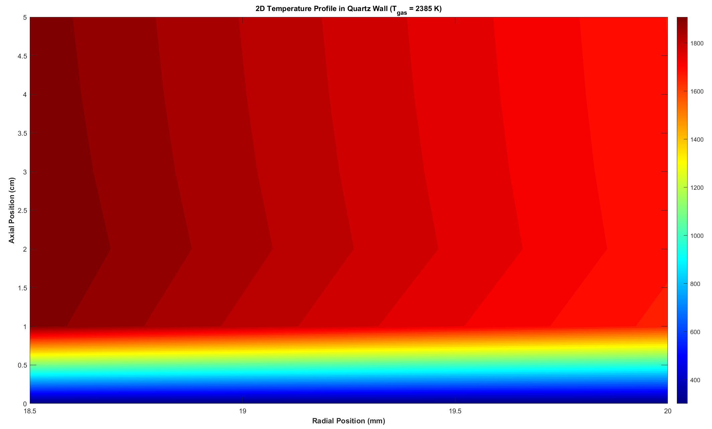
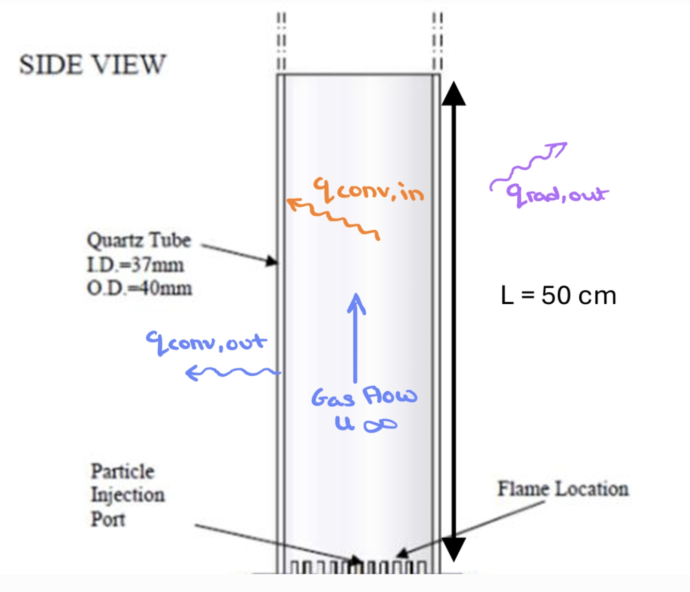
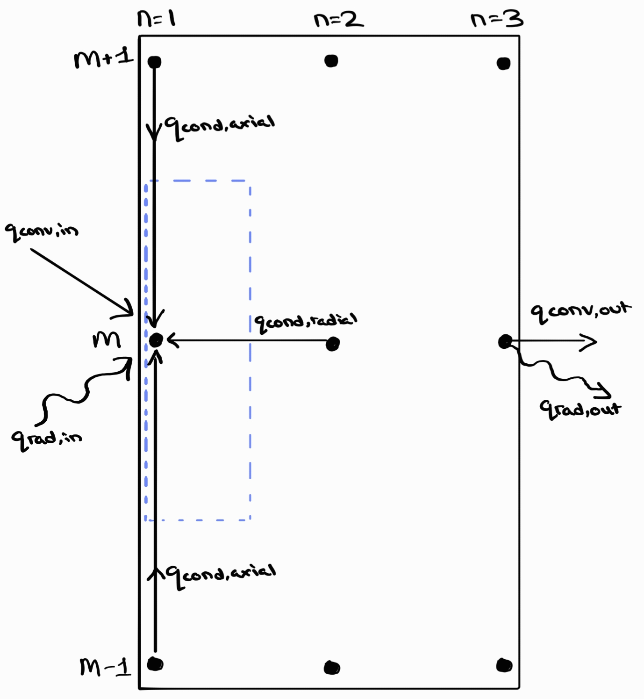
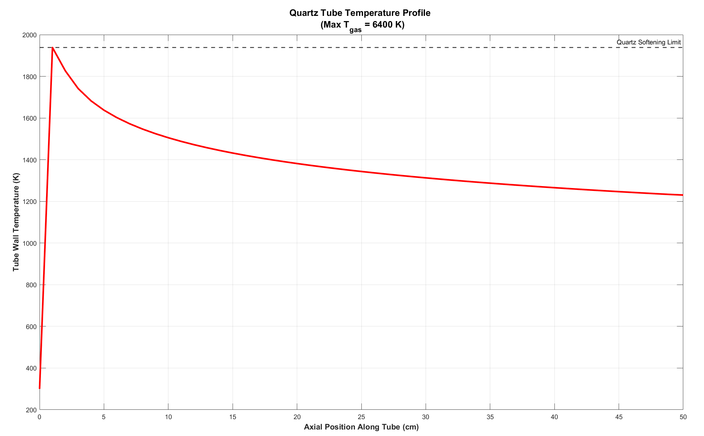
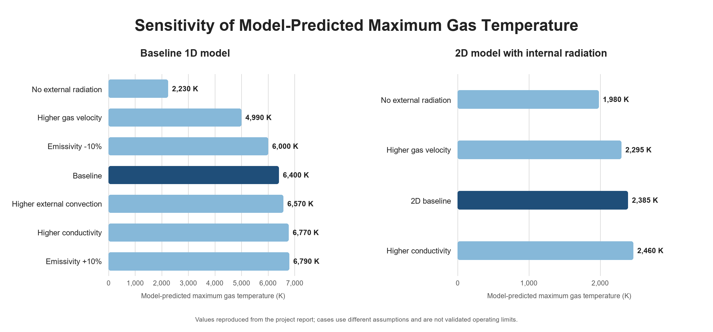

Stage 1
One-dimensional model
Established an axial temperature profile and an initial thermocouple energy balance.
Academic case study · Heat transfer
One-dimensional and axisymmetric finite-difference models of thermocouple heating by conduction, convection, and radiation.

01 · Problem
The analysis estimated the temperature a thermocouple assembly could reach inside a Hencken burner. The energy balance included heating from the surrounding gas and radiation, along with conduction through the thermocouple structure.
The initial model established the dominant terms, but it could not represent radial gradients or the interaction between the bead, stem, and surrounding environment.


02 · Numerical approach
The model combined conduction, convection, and radiation terms. The numerical solution was checked with convergence and sensitivity studies.
Stage 1
Established an axial temperature profile and an initial thermocouple energy balance.
Stage 2
Added radial resolution so the bead and stem geometry affected the predicted temperature field.
Solver
Iterated the finite-difference field and used bisection where the nonlinear radiation terms required it.
Checks
Evaluated the effect of assumptions and parameter values on the result.
03 · Result
The 2D model predicted a peak temperature of 2385 K. Because that value depends on the model assumptions and was not experimentally validated, the report recommended a conservative range of 1900–2000 K.


04 · Methods used